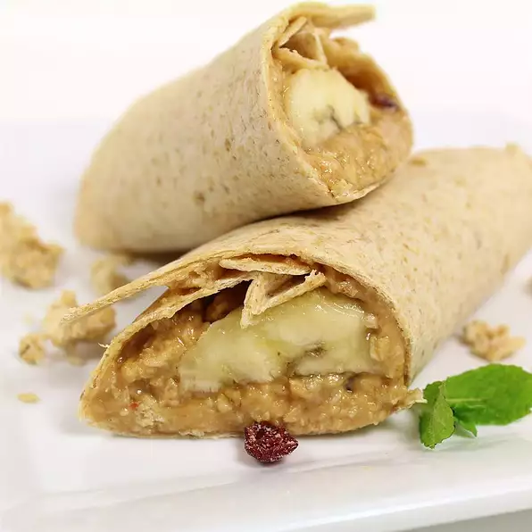

Bannana Wraps

Description:
Simple and fun Bannana Wraps! These can serve as a healthy snack or breakfast, and are super easy to make!
Ingredients:
- 4 teaspoons peanut butter
- 2 tablespoons honey
- ¼ cup shredded coconut
- ½ cup granola
- 1 banana, peeled and halved lengthwise
- 2 large whole wheat tortillas
Instructions:
- Stir together the peanut butter and honey in a bowl until smooth.
Mix in the coconut and granola.
- Divide the mixture in half, and spread half over each tortilla.
Place a banana half in the center of a tortilla, and roll up. Slice the rolls in half to serve.